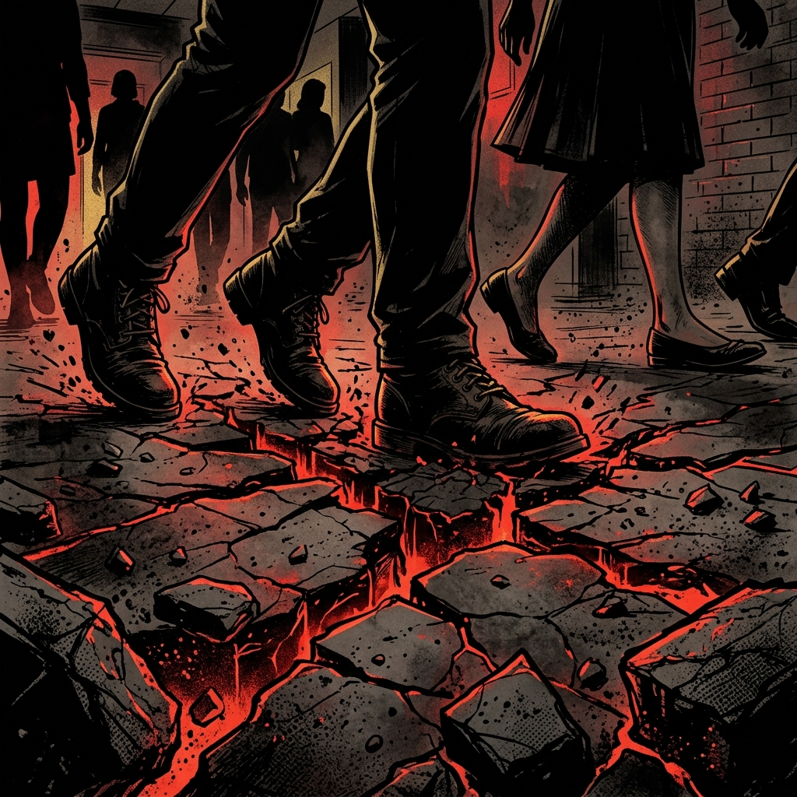
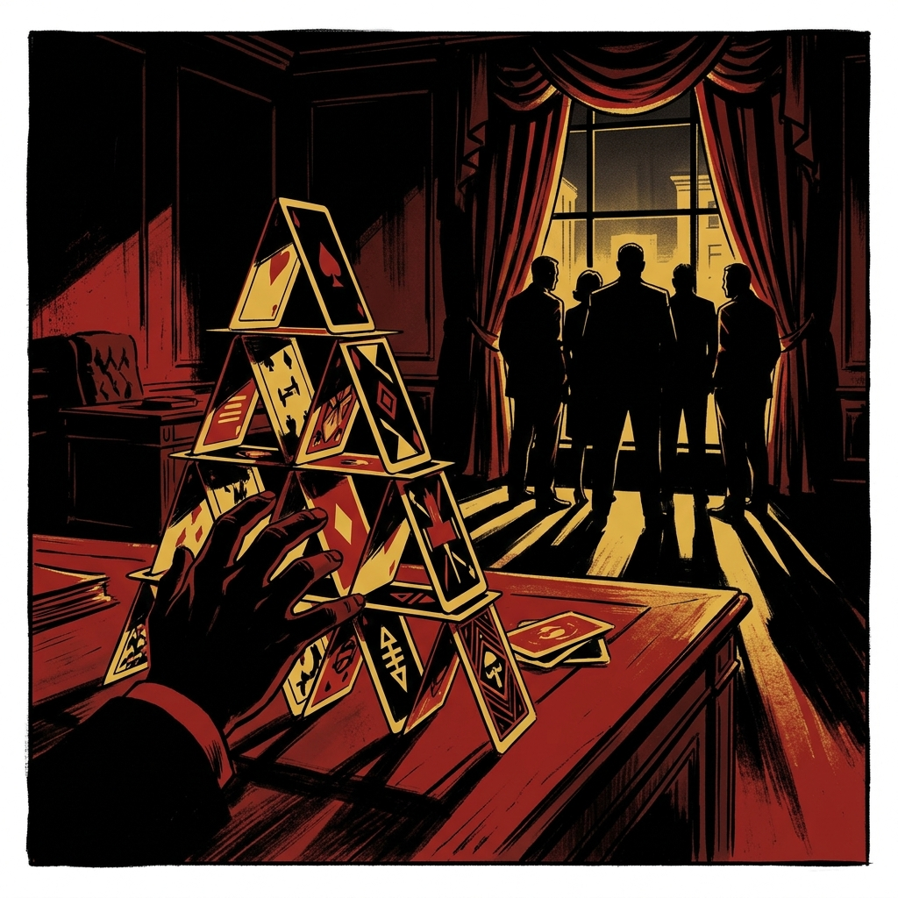
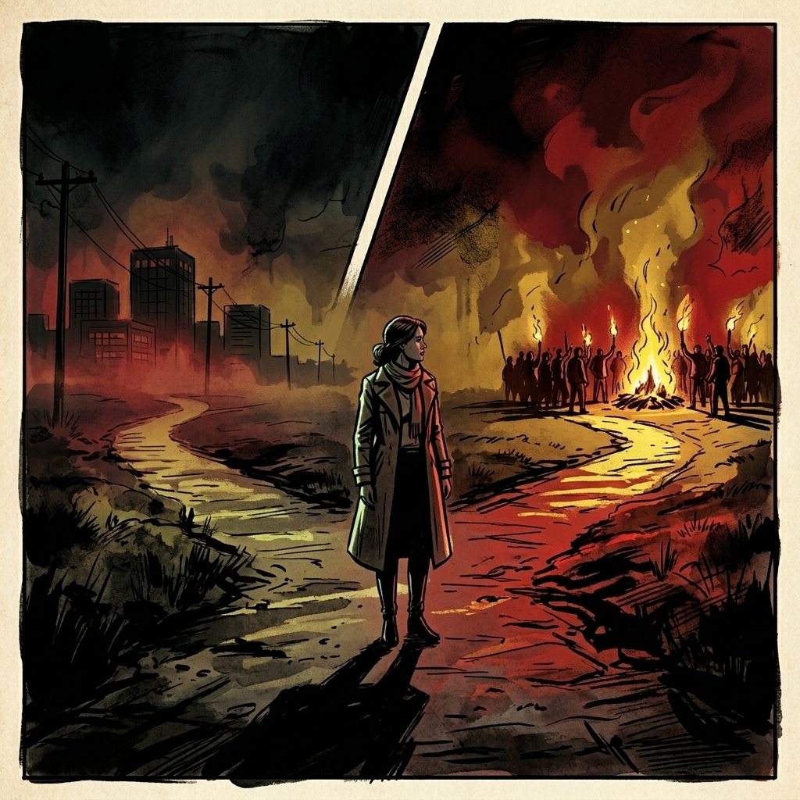
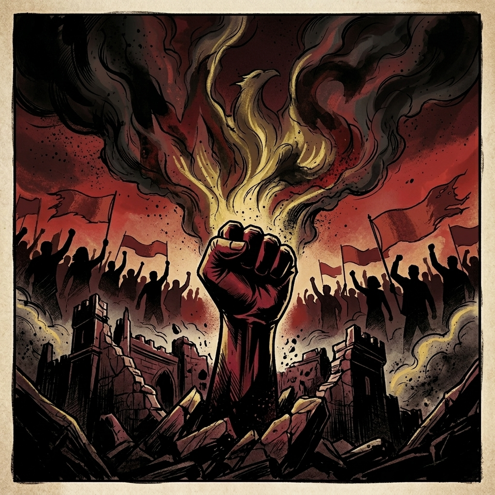
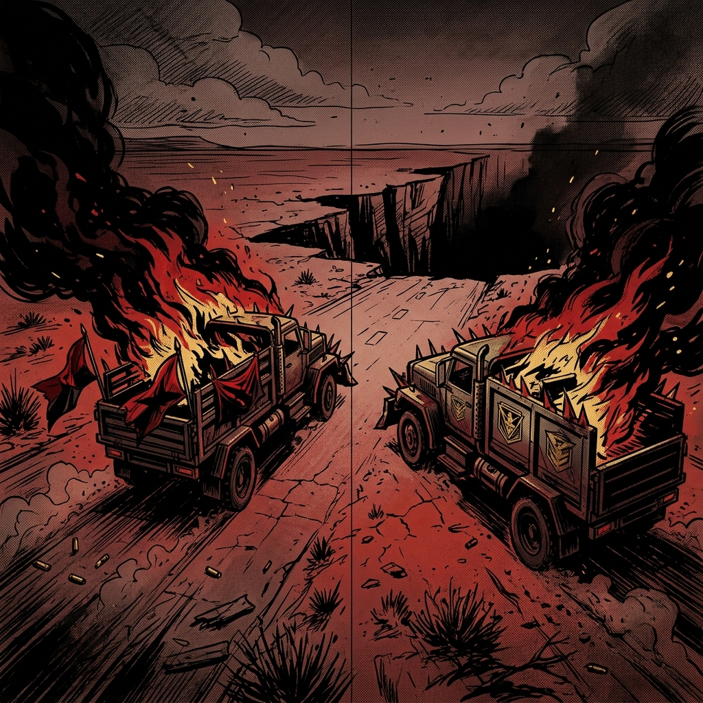
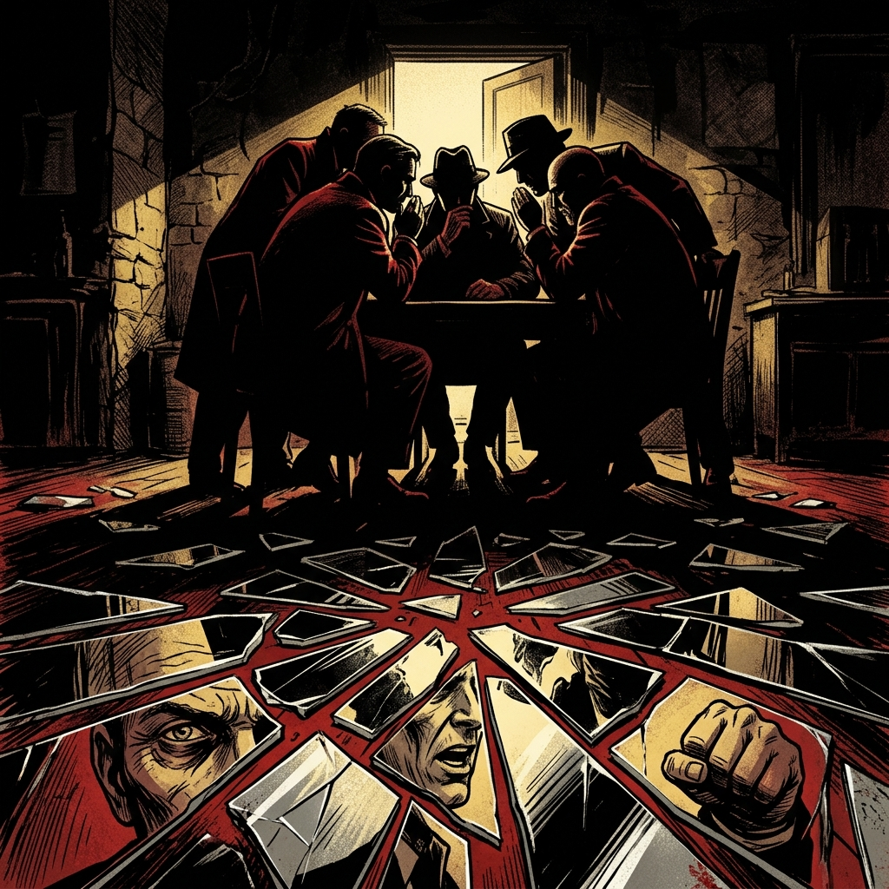
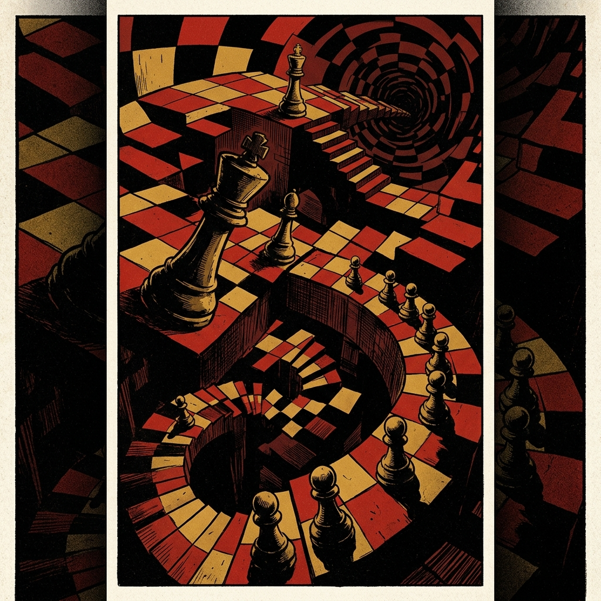
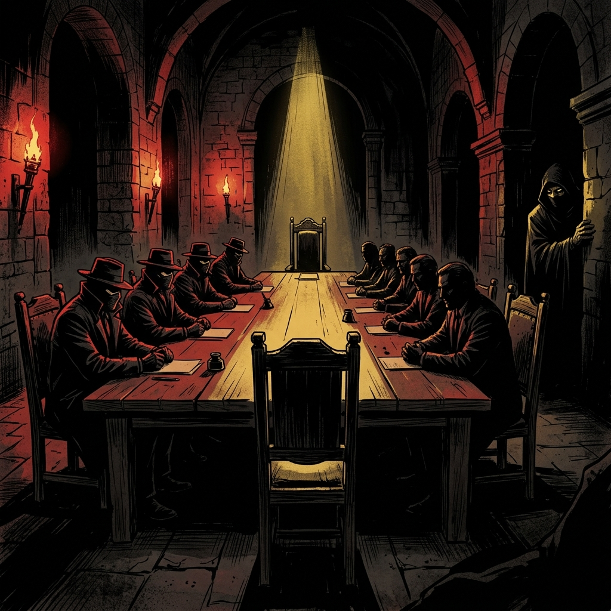
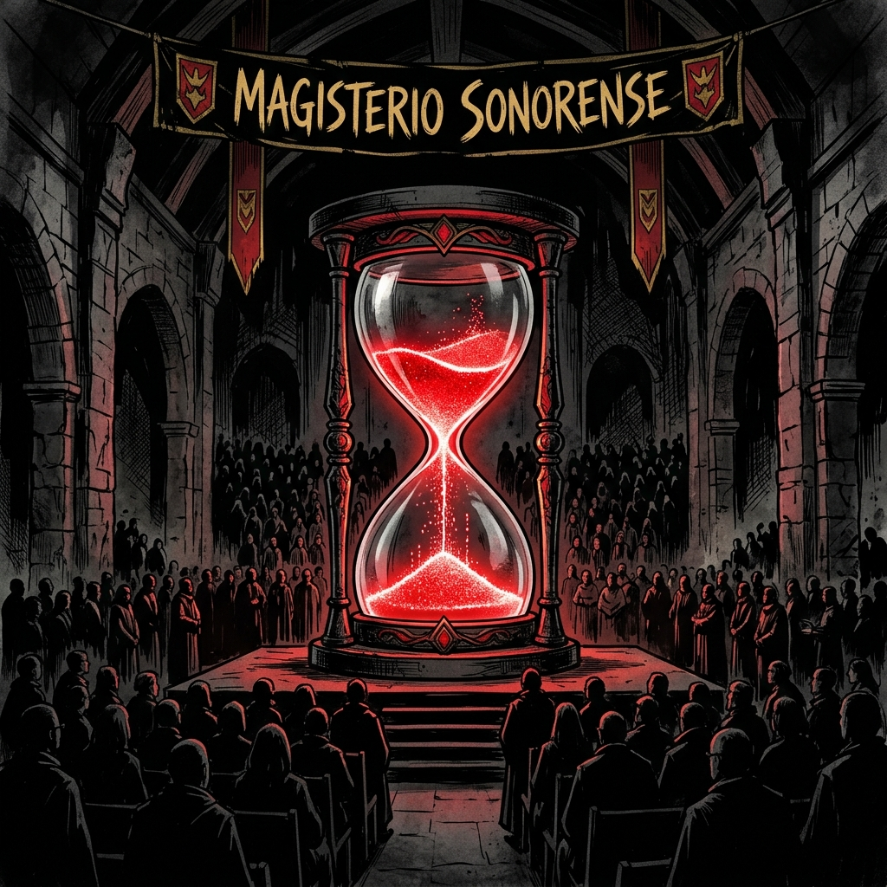

El Reino Fracturado
"En esta tierra donde el sol quema parejo, los que cargan el edificio son los primeros en sentir cuándo se viene abajo."

El Alquimista Desesperado
"Cuando te arrinconan, ya no eliges entre el bien y el mal. Eliges entre sobrevivir o desaparecer."

Castillos de Naipes
"El poder no lo ejercen los que lo necesitan, sino los que lo desean con un hambre que no se les quita."

Las Facciones del Bosque
"Tres bandos que podrían ser uno solo escogen, en cambio, el veneno de la división."

La Gran Cacería del Ciervo
"El venado dorado espera en el claro del monte. Pero pa' cazarlo, todos tienen que jalar parejos."

Carrera al Precipicio
"Dos trocas van a toda madre contra el barranco. Gana el que obligue al otro a dar el volantazo primero."

Susurros de Desconfianza
"Las instituciones no se mueren por falta de lana. Se mueren cuando ya nadie le cree al otro."

El Tablero Infinito
"Los ajedrecistas que calculan infinitos a veces olvidan la lección más simple: a veces, la mejor jugada es dejar de jugar."

Poder de la Segunda Voz
"El que habla primero enseña las cartas. El que habla al último controla la partida."

El Legado Perdido
"Al final, los granos del reloj de arena no distinguen entre los que ganaron y los que perdieron. Nomás caen."